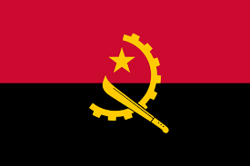
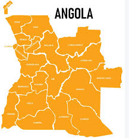

A Angola é um país da região da África Central. É um território populoso, onde vivem quase 34 milhões de pessoas. Possui o petróleo como base de sua economia. Angola ou República de Angola é um país africano localizado na região central do continente. Sua capital é a cidade portuária de Luanda. Banhado pelo oceano Atlântico, o território angolano apresenta clima tropical e relevo planáltico. A população do país é de quase 34 milhões de habitantes, dos quais 68% vivem nas áreas urbanas. A Angola é rica em recursos naturais como o petróleo, que constitui o pilar da economia nacional. Apesar disso, enfrenta uma série de problemas socioeconômicos e estruturais que se agravaram com a guerra civil, que durou de 1975 a 2002.

| República de Angola | |
|---|---|
| Capital: | Luanda |
| Língua oficial: | Português |
| Densidade: | 29,4 hab./km2 |
| Moeda: | Kwanza |
A Angola é um país localizado na região da África Central, situado no litoral oeste do continente. Sua capital é a cidade de Luanda. O território angolano possui área de 1.246.700 km², sendo assim o 7º maior país em extensão da África. A oeste, é banhado pelo oceano Atlântico, fazendo divisa com as seguintes nações: República Democrática do Congo, ao norte e a leste; Zâmbia, a leste; Botsuana, a sudeste; Namíbia, ao sul. Divide-se em 18 províncias, sendo uma delas Cambinda, que constitui um enclave situado na costa, na fronteira do Congo com a República Democrática do Congo.

A Angola apresenta uma grande riqueza cultural derivada das diversas etnias que compõem a sua população. Cada uma delas possui um conjunto de costumes e tradições próprio que contribui para a formação do quadro nacional. O país reúne a segunda maior população falante de português do mundo, atrás apenas do Brasil, mas diversas outras línguas são faladas no território angolano, como kimbundu, umbundu, fiote, nhanheca, kikongu, tchokwe e kwanyama. Além das celebrações tradicionais de cada uma das etnias do país, existem algumas festas realizadas anualmente que envolvem toda a nação e atraem pessoas de todos os lugares, como o Carnaval, destacando-se o realizado em Luanda, e a Festa da Nossa Senhora da Muxima em Kissama, onde se localiza o seu santuário. Anuncie aqui O artesanato é um elemento típico da cultura angolana, assim como os mais diversos estilos musicais e de dança, antigos e recentes, que expressam a pluralidade cultural do país, sendo alguns deles: semba, rebita, cabetula, kuduro, zouk e kizomba. A culinária angolana utiliza ingredientes tropicais e típicos da região, recebendo ainda um pouco da influência portuguesa. O funge é um dos pratos tradicionais da Angola, comparado muitas vezes a um pirão, e é feito à base de mandioca ou milho, variando regionalmente. Dentre seus acompanhamentos está o calulu, à base de carne vermelha ou peixe, e outros ingredientes.
A economia angolana é a nona maior da África, com um PIB de quase 75 bilhões de dólares, embora esse valor não reflita as condições socioeconômicas do país, que é considerado uma nação emergente e possui 32,3% de sua população vivendo abaixo da linha da pobreza. O PIB per capita nacional é baixo — de 2280 dólares, segundo o Fundo Monetário Internacional (FMI). A longa guerra civil angolana, ao lado de fatores estruturais históricos, contribuíram para a fragilização da economia interna. Membro da Organização dos Países Exportadores de Petróleo (Opep), a economia da Angola é altamente dependente da exploração e comercialização do petróleo. Essas atividades contribuem com quase metade do PIB do país e representam 90% das exportações angolanas. Os principais destinos são a China, Índia, Emirados Árabes Unidos, Portugal e Espanha. Além do petróleo, outras riquezas naturais são importantes para o comércio exterior do país, como os diamantes. A indústria é o setor preponderante da economia angolana, com destaque para a mineração, as indústrias petroquímica, têxtil, de reparo de navios, do tabaco e o processamento de alimentos. A produção agropecuária, em contrapartida, é de extrema importância para o país, pois, além de fornecer alimentos para a população, concentra 85% de toda a mão de obra da Angola. Entre os principais cultivos desenvolvidos no país estão:
As 7 Maravilhas de Angola, escolhidas numa votação popular, são: